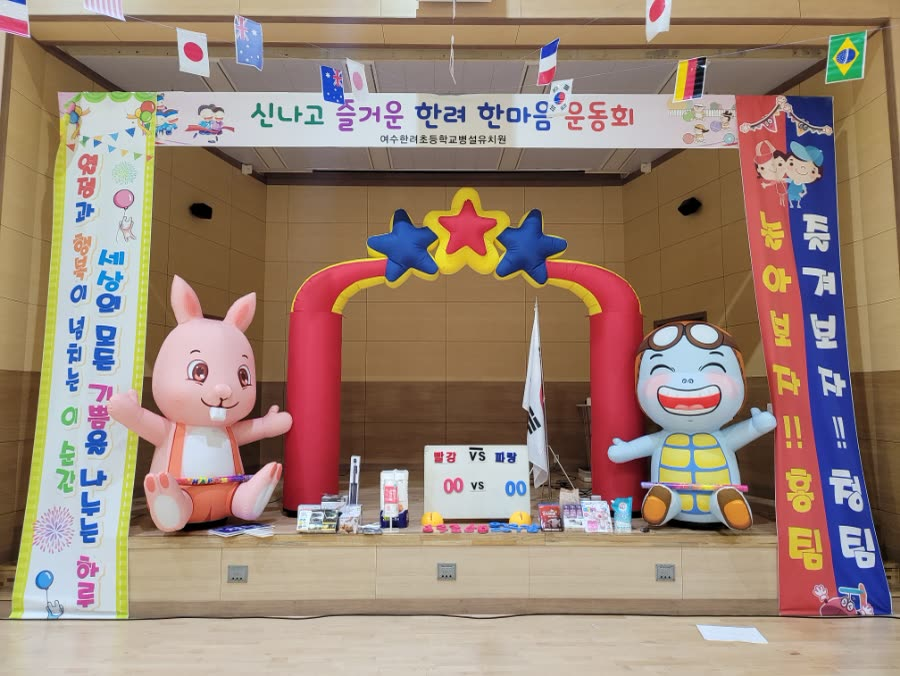
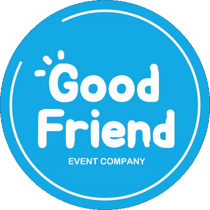
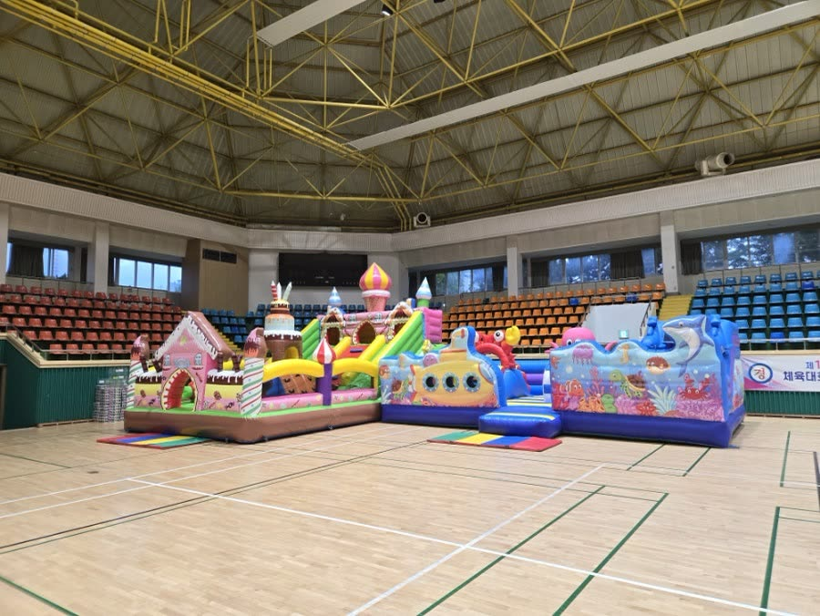
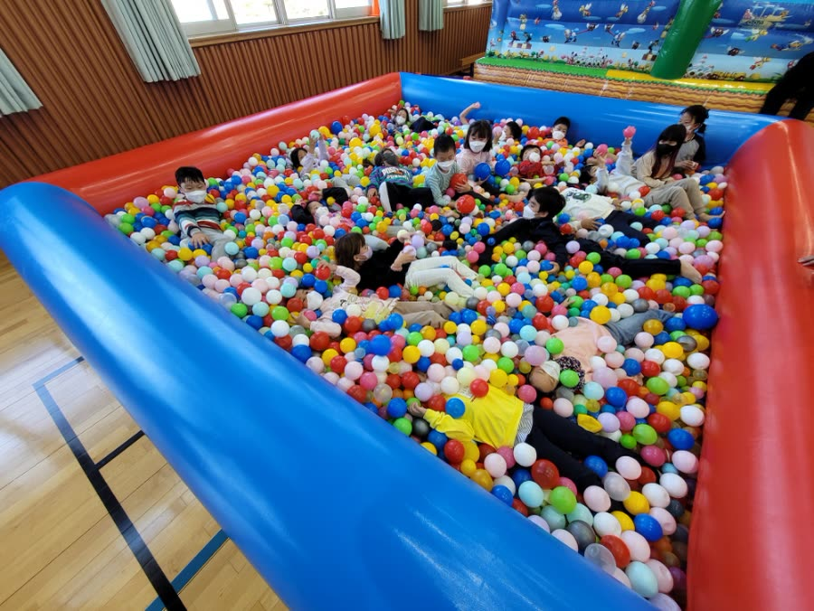
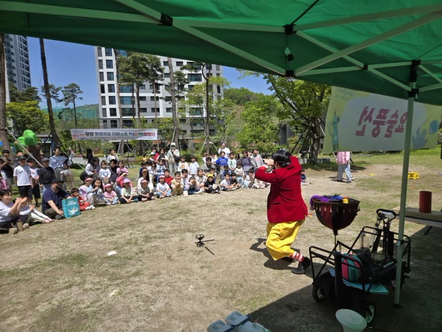
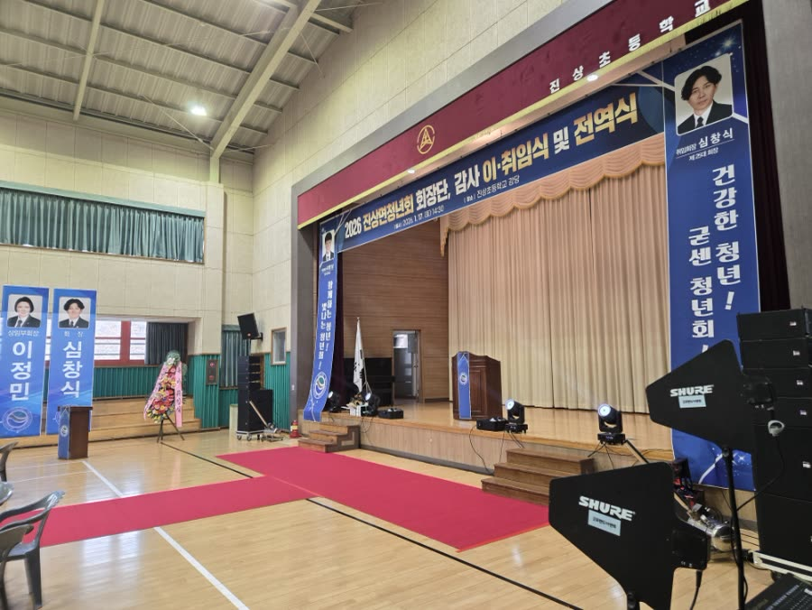
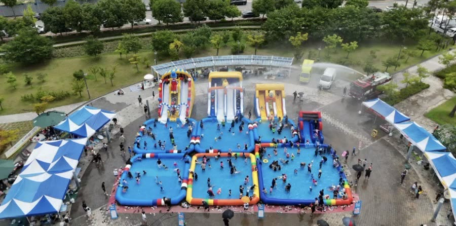

운동회 · 체육대회
종목 구성부터 아치 · 현수막 · 점수판 설치, 체육강사 진행, 레크리에이션, 당일 철거까지.

010-9436-4769GWANGYANG RECORD
광양읍, 중마동, 금호동, 광영동, 태인동, 진월면까지 어디든 나갑니다.
PROGRAM

종목 구성부터 아치 · 현수막 · 점수판 설치, 체육강사 진행, 레크리에이션, 당일 철거까지.

장애물 바운스, 챌린지 바운스, 해적선, 대형 성까지 20종 이상을 직접 보유하고 직접 설치합니다.

키즈놀이터와 실내놀이터를 통째로 들고 갑니다. 볼풀장, 블록놀이, 게임 부스.

버블쇼, 매직쇼, 인형극. 어린이날 행사와 학예발표회, 가을음악회.

지역축제와 관공서 행사, 이취임식 · 기공식. 음향 · 조명 · 무대 · 천막 직접 시공.

에어풀장 · 에어슬라이드 · 에어수영장. 내년 여름 일정은 지금부터 받습니다.
FAQ
사무실이 광양시 덕산4길에 있어 시내 어디든 20분이면 닿습니다. 당일 요청도 장비가 비어 있으면 나갑니다. 일단 전화 주세요.
광양 전어축제, 광영 가야산문화제, 광영동 어린이 한마당 같은 지역축제와 광양시청소년문화센터 한마음 가족운동회를 맡았습니다. 광양 지역 어린이집·유치원 운동회는 해마다 나갑니다.